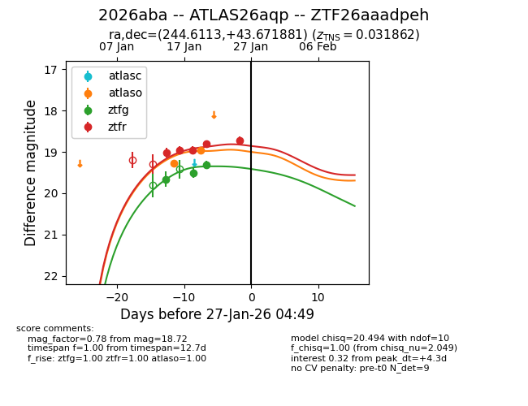
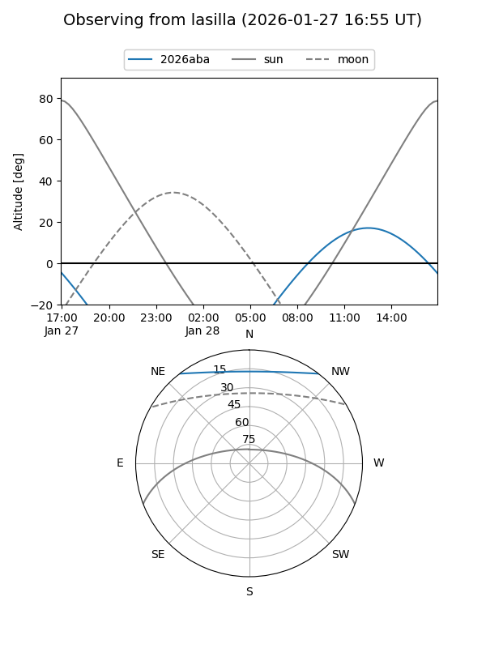
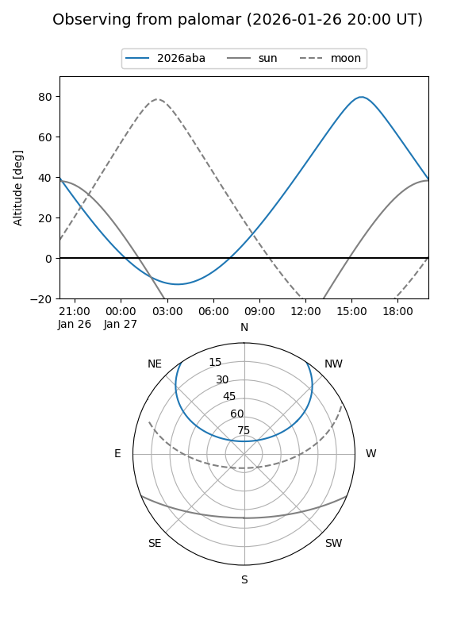
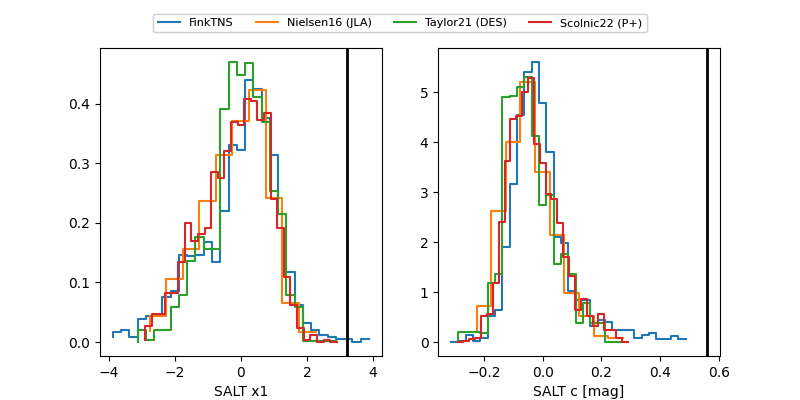

2026aba
Target 2026aba at 2026-01-23 20:40
Aliases and brokers:
FINK: link
Lasair: link
ALeRCE: link
TNS: link
YSE: link
alt names
ZTF26aaadpeh (ztf,fink_ztf)
2026aba (tns,yse)
ATLAS26aqp (atlas)
Coordinates:
equatorial (ra, dec) = 244.6113,+43.67188
equatorial (HMS+DMS) = 16:18:26.72,+43:40:18.77
galactic (l, b) = (68.7783,+45.51098)
Flags:
Photometry:
last ztfg=19.31, ztfr=18.81
3 ztfg, 4 ztfr detections
Lightcurve

Visibility


Additional plots
